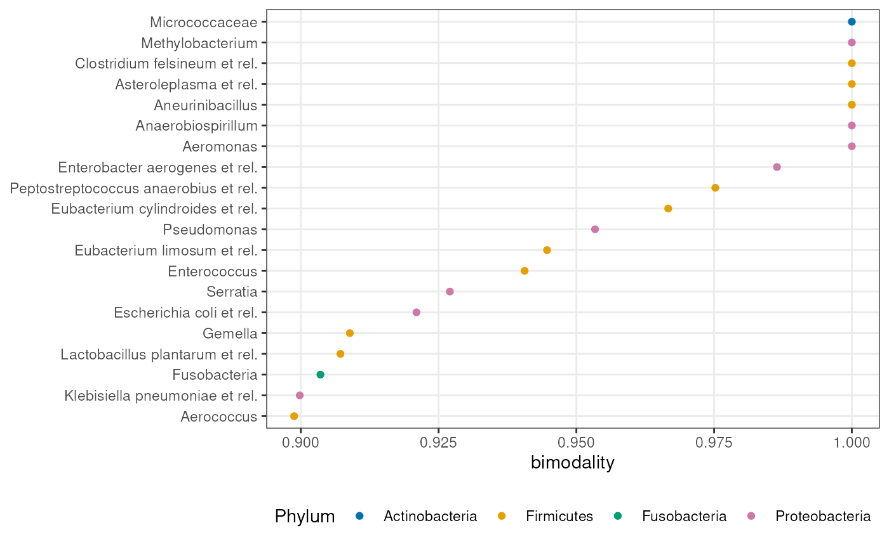
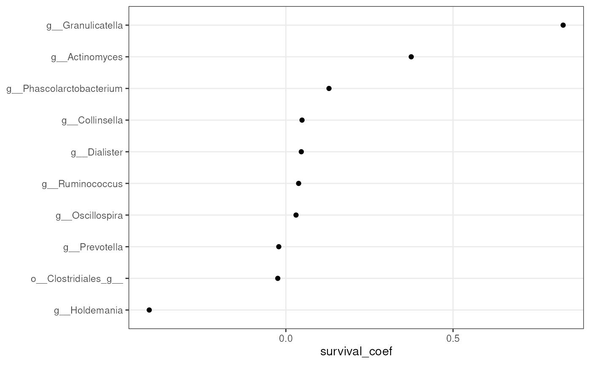
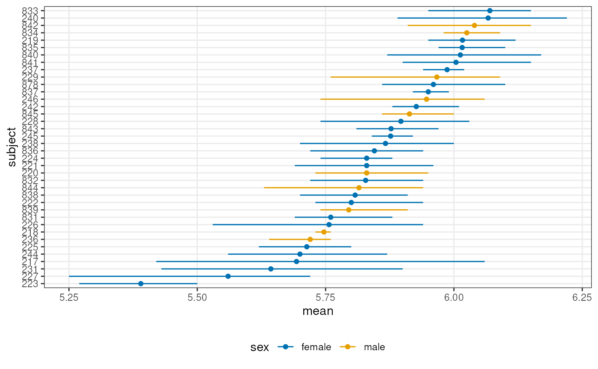

Plot ranked statistics of features or subjects
Source:R/AllGenerics.R, R/plotStats.R, R/zzz-mae.R
plotStats.RdplotStats() draws one statistic per feature or per subject, ranked
by value, with optional intervals. It plots results stored by other
functions, such as bimodality and stability scores or Cox coefficients
from miaTime, and per-subject estimates such as slopes.
Usage
plotStats(x, ...)
# S4 method for class 'SummarizedExperiment'
plotStats(
x,
stat,
lower = NULL,
upper = NULL,
group = NULL,
top = NULL,
colour.by = NULL,
...
)
# S4 method for class 'MultiAssayExperiment'
plotStats(x, ..., experiment = 1L)Arguments
- x
a
SummarizedExperimentobject.- ...
additional arguments passed to
geom_point.- stat
Character scalar. Specifies the column holding the statistic: a column ofrowData(x)for features, or ofcolData(x)for subjects whengroupis given.- lower, upper
Character scalar. Specify the columns holding the interval aroundstat. Give both or neither. (Default:NULL)- group
Character scalar. Specifies the column fromcolData(x)that identifies subjects. If given, one row is drawn per subject, andstat,lower,upperandcolour.bymust be constant within each subject. (Default:NULL)- top
Integer scalar. Keeps the features or subjects with the largest absolute statistics. IfNULL, keeps all. (Default:NULL)- colour.by
Character scalar. Specifies the column, from the same table asstat, that colours the points. (Default:NULL)- experiment
Character scalarorinteger scalar. For aMultiAssayExperiment, the experiment to plot; its samples get thecolDataofx. (Default:1L)
Details
Rows are ordered by the statistic, the largest at the top. Missing
statistics are dropped. Above 60 rows, row labels are hidden; use
top to keep fewer.
Examples
# Bimodality of each genus over all samples, computed by miaTime
data("hitchip1006", package = "miaTime")
tse <- miaTime::addBimodality(hitchip1006, assay.type = "counts")
plotStats(tse, stat = "bimodality", top = 20, colour.by = "Phylum")

# Cox coefficients for time to relapse, computed by miaTime
data("crohn_survival", package = "miaTime")
set.seed(1)
tse <- miaTime::addSurvival(crohn_survival, assay.type = "counts",
time.col = "event_time", event.col = "event")
#> Warning: Starting in glmnet 5.1, the default Cox tie-handling method will change from 'breslow' to 'efron' (matching survival::coxph). To silence this message and lock in the v5.0 default, pass cox.ties = 'breslow' explicitly. To preview the v5.1 behavior, pass cox.ties = 'efron'.
#> Warning: Starting in glmnet 5.1, the default Cox tie-handling method will change from 'breslow' to 'efron' (matching survival::coxph). To silence this message and lock in the v5.0 default, pass cox.ties = 'breslow' explicitly. To preview the v5.1 behavior, pass cox.ties = 'efron'.
#> Warning: Starting in glmnet 5.1, the default Cox tie-handling method will change from 'breslow' to 'efron' (matching survival::coxph). To silence this message and lock in the v5.0 default, pass cox.ties = 'breslow' explicitly. To preview the v5.1 behavior, pass cox.ties = 'efron'.
#> Warning: Starting in glmnet 5.1, the default Cox tie-handling method will change from 'breslow' to 'efron' (matching survival::coxph). To silence this message and lock in the v5.0 default, pass cox.ties = 'breslow' explicitly. To preview the v5.1 behavior, pass cox.ties = 'efron'.
#> Warning: Starting in glmnet 5.1, the default Cox tie-handling method will change from 'breslow' to 'efron' (matching survival::coxph). To silence this message and lock in the v5.0 default, pass cox.ties = 'breslow' explicitly. To preview the v5.1 behavior, pass cox.ties = 'efron'.
#> Warning: Starting in glmnet 5.1, the default Cox tie-handling method will change from 'breslow' to 'efron' (matching survival::coxph). To silence this message and lock in the v5.0 default, pass cox.ties = 'breslow' explicitly. To preview the v5.1 behavior, pass cox.ties = 'efron'.
#> Warning: Starting in glmnet 5.1, the default Cox tie-handling method will change from 'breslow' to 'efron' (matching survival::coxph). To silence this message and lock in the v5.0 default, pass cox.ties = 'breslow' explicitly. To preview the v5.1 behavior, pass cox.ties = 'efron'.
#> Warning: Starting in glmnet 5.1, the default Cox tie-handling method will change from 'breslow' to 'efron' (matching survival::coxph). To silence this message and lock in the v5.0 default, pass cox.ties = 'breslow' explicitly. To preview the v5.1 behavior, pass cox.ties = 'efron'.
#> Warning: Starting in glmnet 5.1, the default Cox tie-handling method will change from 'breslow' to 'efron' (matching survival::coxph). To silence this message and lock in the v5.0 default, pass cox.ties = 'breslow' explicitly. To preview the v5.1 behavior, pass cox.ties = 'efron'.
#> Warning: Starting in glmnet 5.1, the default Cox tie-handling method will change from 'breslow' to 'efron' (matching survival::coxph). To silence this message and lock in the v5.0 default, pass cox.ties = 'breslow' explicitly. To preview the v5.1 behavior, pass cox.ties = 'efron'.
#> Warning: Starting in glmnet 5.1, the default Cox tie-handling method will change from 'breslow' to 'efron' (matching survival::coxph). To silence this message and lock in the v5.0 default, pass cox.ties = 'breslow' explicitly. To preview the v5.1 behavior, pass cox.ties = 'efron'.
plotStats(tse, stat = "survival_coef", top = 10)

# Mean diversity of each subject with its range over visits
tse <- hitchip1006
tse <- tse[, tse$subject %in% names(which(table(tse$subject) >= 3))]
tse$mean <- ave(tse$diversity, tse$subject, FUN = mean)
tse$min <- ave(tse$diversity, tse$subject, FUN = min)
tse$max <- ave(tse$diversity, tse$subject, FUN = max)
plotStats(tse, stat = "mean", lower = "min", upper = "max",
group = "subject", colour.by = "sex")
